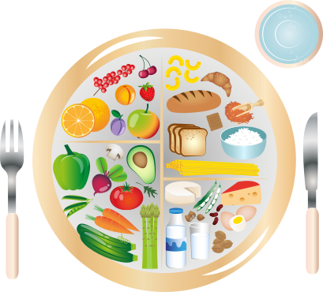

At My Balanced Plate, we believe that understanding a balanced meal is only part of the journey.
Our long-term goal is to help customers become more confident in preparing practical, balanced meals at home.
As My Balanced Plate develops, we plan to introduce meal-preparation guidance designed to help
customers understand how to plan, prepare and portion meals in a practical way.
Guidance on choosing ingredients and putting together balanced meals for everyday eating.

Helping customers understand how different food components can be combined and portioned as part of a balanced meal.
Using our existing meal-analysis approach, including Journable as a supporting tool, to help customers understand the
estimated nutritional information associated with meals.